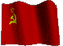

De: La Frikipedia, la enciclopedia extremadamente seria.
De: La Frikipedia, la enciclopedia extremadamente seria. De: La Frikipedia, la enciclopedia extremadamente seria.
«¡Pro Evolution Soccer (número)!»
~ Juan Carlos Rivero cuando se inicia el juego
«Sin ninguna duda...»
~ Radomir Antic cuando le preguntaron si jugaba al Pro
«¡¡Me cagüen...!!»
~ Tú cuando fallas un penalti
«Yo también quería fichar a uno de esos jugadores tan buenos... hasta que me di cuenta de que sólo existían en el Pro»
~ Florentino Pérez sobre Ruskin, Ordaz, Castolo y compañía
«El defensa la pasa al centro, pase al extremo, éste otra vez al centro y la retiene, ¡la retiene!¡¡LA RETIENE!!...»
~ Juan Carlos Rivero durante un México-Portugal
Proveniente del latín "Per Evolutione Soquete" que significa Anfetamina de la divinidad, también conocido como FISH (PES) por los gringos y como Winning Eleven por los chinos. Considerado en los comienzos como la piedra de la verdad, Es un simulador de Furbo creado por los maximos savios del futbol, los Japoneses. Pro Evolution Soccer fue investigado durante mucho tiempo como una pieza fundamental de la física, química y otras religiones. En la actualidad el Pro Evolution Soccer es el entretenimiento del invisible e indetectable Monstruo de Espagueti Volador, el cual ha compartido con todos sus súbditos para contrarrestar la expansión de la iglesia FIFAnia, nombrando a Juan Carlos Rivero como su mesías y a Iñaki Cano como su profeta.
Se cree que la creación del Pro Evolution Soccer se remonta al siglo en que se descubrió la cerveza. Aunque ésto se encuentra criticado por un espécimen extraño denominado italiano, del cual se sabe poco (que comen réplicas del gran creador es lo más importante), y que sostiene que data del siglo I d.C. y que coincide con el renacimiento der fúrbo en Roma.
Por otro lado, los satanistas eruditos, correctamente llamados italianos o tanos, consideran que el Pro Evolution Soccer es lo que "salió mal" en la creación del Universo y ha dado lugar a los hippies (contraparte de los góticos).
¡¡¡¡AVISO!!!!: En este juego no puedes pasar de octavos de final en ningun torneo si usas al real mandril, aunque juegues contra el xerez
Sin dejar lugar a discusiones de religión, el Pro Evolution Soccer es un objeto con forma circular y un agujero en el centro, formado por diferentes sustancias alucinógenas que, consumidas por un ordenador o una Pleisteiyon, causa efectos en la visión y el oído de quien mira la gran caja negra (mal llamado televisor o TV); es lo que comúnmente se denomina videojuego. El efecto es generalmente similar cuando se consume entre dos personas, una de ellas sonríe, grita o se ríe del otro, mientras que el otro le echa la culpa a un "joistic" (aparato reconocido como el controlador de seres que compiten simulando ser Dios en un partido).
Para obtener mejor información sobre el Pro Evolution Soccer, dróguese, experimente por su cuenta pajeese rápidamente, no se deje engañar por falsas copias. Puede adquirir el producto comprándomelo a través de internete, teléfono, telégrafo o telepatía.
Pro Evolution consta de enemigo final opcional, imbatible y temido por todos, diversas personas han cometido suicidio tratando de derrotar a Kazuki Ito, alias el tarjetas rojas.
Como todos sabemos, el Pro no es más que una imitación barata del fúrbo que se puede ver en los estadios de todo el mundo, pero en vez de sudar tú al que se la suda es al productor del juego.
El objetivo principal del juego es meter más balones en la red que el rival. Para ello debemos usar los botones que tiene nuestro mando (para lo cuál necesitaremos un mando y dos manos, o en su defecto, dos pezuñas o dos pies) para mover a los muñequitos que aparecen en nuestra pantalla. Si en nuestra pantalla no aparecen muñequitos, ¡enciéndela so gañán!
Los botones son esenciales en este juego. Los que montaron este tinglao se aseguraron de darle una función a cada botón del mando; y por si fuera poco, los botones tienen distintas funciones según tengas o no la pelotita, por lo que para jugar a este juego necesitas tener un máster en astrofísica o cualquier equivalente.
Como cada consoladora tiene un mando distinto, no podemos estar toda la tarde explicándo cómo va esto, así que tomaremos como ejemplo el mando de la Pley:
Una vez que sabemos cómo cojones jugar a esto, debemos destacar otro aspecto fundamental del jogo que hace que su duración media se alarge 15 minutos más: el juego de estrategia.
A diferencia de otros juegos de fúrbo y de Estratego, el Pro contiene multitud de formaciones para tu equipo además de estrategias básicas para que cada partido sea diferente al anterior. Entre todas destacaremos:
El Pro Evolution Soccer cuenta con varios modos de juegos que llevan la experiencia virtual a su máximo truño nivel. A parte del típico amistoso parrandero, el Pro incorpora además:
En el Modo Liga puedes jugar con hasta 5 personas y media más, eligiendo qué equipos participan e incluso pudiendo prenderle fuego a la pley cambiarle el nombre a la liga, todo un avance tecnológico.
Con este modo surgió un problema a la hora de apoquinar la pasta a los dirigentes de las distintas ligas internacionales, y como Koñami no disponía de tanto presupuesto, decidió comprar las más baratas y el resto se las inventó; total, los japos no se darían ni cuenta... pero los europeos sí...
| Logotipo | Nombre | Equipos y partidos | Reglas de acumulación de tarjetas |
|---|---|---|---|
| Liga Ibérica | 20 equipos, 8 partidos | Los jugadores que acumulen 8 cupones amarillos tienen derecho a una jornada de relajación | |
| Bolognese League | 18 equipos, 19 partidos | Los jugadores no pueden recibir tarjetas amarillas, sólo salamis o pepperonis. | |
| Bundes Brühwurst | 18 equipos, 53 partidos | Los jugadores reciben salchichas y cervezas en lugar de tarjetas amarillas y rojas. Tres salchichas equivalen a una cerveza. | |
| Spliff League | 21 equipos, 35 partidos | Los jugadores sólo pueden recibir tarjetas verdes. Una tarjeta roja representa la ingresión en la UCI por sobredosis. | |
 |
Baguette de la Ligue | 20 equipos, 30 partidos | Cuatro baguettes suponen un partido de suspensión. Una baguette roja supone decapitación pública en la guillotina. |
| Hooligan League | 20 equipos, 138 partidos | Los que acumulen cinco o seis tarjetas deben recibir una tunda por parte de los aficionados. Si acumulan 12 tarjetas, recibirán además tortura medieval en la Torre de Londres. | |
|  | Чемпионат СССР по хоккею | 4 Equipos, 43 partidos | Los jugadores que acumulen 5 tarjetas rojas recibirán una condecoración. Los que no logren recibirlas al cabo del año serán trasladados a Siberia |
| 侍リーグ | 1 Equipo, 3 partidos | Los jugadores que se deshonren recibiendo una tarjeta deberán hacerse un hara-kiri. | |
| Liga Maradoniana | 124 equipos, 384 partidos | Los jugadores que acumulen 3 tangas de una misma mina reciben una noche de garcha gratis. | |
| Liga UruPaco | 2 equipos, 35.000 partidos | 2 limones equivalen a 1 frutilla. | |
| |
Vuvuzela League | 8 equipos, 69 partidos | La juegan negros y se juega al todo o nada. Es expulsado el equipo que menos jugadores mantenga en el terreno con los tímpanos en perfecto estado. |
En este modo te eliges un equipo y el que te toque ta tocao. Tienes que empezar desde la División 2, o si quieres, desde la División 1. En la Liga Máster puedes fichar a jugadores como Benji Price o UEFA Champions League en el Pro.
En el año 2005 el comentario "Agh" de Iñaki Cano provocó el suicidio de miles de millones de personas, aunque después se le hechó la culpa a los delfines.
Aunque bien es sabido que el "Horroroso" produce cáncer de cerebelo a la 250ª vez que lo oímos (es decir, al 5º partido), nadie pareció percatarse de este crimen contra la humanidad, por lo que Iñaki continúa con sus atentados audiovisuales convencido de que nadie le podrá detener jamás.
Iñaki se caracteriza también por otros comentarios como:
También están los comentaríos en los que te hacen parecer un paquete barriobajero diciéndote frases como...
Tras tensas negociaciones, en el año 2009 mandaron a Iñaki a tragar tomar por culo y lo sustituyeron por un comentarista de notable prestigio y todo un ses-simbol: Maldini.
==Comentarios de Cristian Martinoli y Luis Gracia==
Para una buena comprensión e información, ha de leerse el Síndrome de Oliver y Benji
Si buscas los hechos del PES, ve aqui Anexo:Hechos del Pro Evolution Soccer
1) El jugador ganador deberá siempre dar revancha si el perdedor se la pide. Jugar un sólo partido es de “cagón”.
2) Si cada jugador gana un partido, deberá siempre jugarse “el bueno”.
3) Está prohibido coger el móvil durante el partido. a) La única excepción a la regla 3 es que quien llame sea la novia del jugador. En dicha situación el jugador tiene permiso para cogerlo y decir, “estoy jugando al Pro.” Si la novia no entiende qué quiere decir esto, no vale la pena que siga la relación y el jugador debería finalizarla inmediatamente (siempre y cuando esto no interrumpa el partido).
4) El jugador que abandona un partido por la mitad no debería jugar nunca más, a menos que haya un acuerdo previo entre todos los jugadores. a) Si el jugador desertor iba perdiendo en el momento de abandonar pierde el derecho a jugar al Pro por tiempo indeterminado a ser decidido por sus amigos. b) Si un jugador va perdiendo por goleada (diferencia de 3 (tres) goles o más) y comienza a desvirtuar el partido (autoexpulsando jugadores a propósito, sacar el portero hasta mediocampo, metiendose goles en propia, etc.) el jugador recibe titulo de "ultra cagón". El "ultra cagón" pierde el derecho a jugar hasta que sus ex-amigos lo perdonen. Sus ex-amigos reciben el derecho de golpear e insultar al "ultra cagón". c) Si un jugador va perdiendo por goleada y apaga el Pro entra en categoria de "cagón mas grande del mundo" y podra recibir insultos, golpes y perderá el derecho a jugar al Pro por tiempo indeterminado.
5) Cuando un jugador se está yendo sólo hacia la porteria contraria, el contrincante puede darle un hachazo por detrás siempre y cuando esté dispuesto a recibir el título de “muy cagón” o “sin códigos.” a) Además el “muy cagón” puede recibir curritos, patadas y otro tipo de golpes. El derecho de golpear al “muy cagón” se reserva para quien recibió la falta. b) El nivel del “muy cagón” será mayor cuanto mas caliente sea el partido. c) Si el partido está empatado o hay diferencia de 1 (un) gol y se está en los últimos 5 (cinco) minutos de partido y se produce una de estas faltas, quien cometió la falta recibe el título de “hiper-cagón más grande del mundo” y puede perder amigos.
6) El árbitro del Pro es el que decide. a) Si pita un penalti ridículo, vale igual. b) Lo mismo vale para penaltis obvios no pitados, goles fantasma, fueras de juego dudosos y “cuando tocan al jugador antes de que chute y el tiro se va a la luna y el árbitro no pita nada” (típico).
7) En partidos calientes (partidos empatados o diferencia de solo un gol) no se puede ver la repetición de un tiro libre que no entra o de un córner o ningún tipo de repetición que no terminó en gol a menos que: a) haya terminado en palo o travesaño b) haya acuerdo entre todos los jugadores que la jugada es digna de ser vista de nuevo.
8) Si el ganador tuvo más tiros, más tiros a puerta y más posesión de balón el partido fue un baile y tiene derecho al "chorreo", el perdedor se tiene que joder.
9) Si un jugador mete gol picándosela al portero, tiene derecho a ver la repetición cuantas veces quiera.
10) Si un jugador mete gol de tiro libre tiene derecho a ver la repetición cuantas veces quiera.
11) Si un grupo de amigos se juntan a jugar al Pro antes de salir y terminan jugando hasta las 6 de la mañana, la noche fue un éxito.
12) Si hay multitap, deberán jugar la misma cantidad de jugadores que controles disponibles. a) Los duelos personales solo están permitidos si los demás jugadores están dispuestos a ceder su turno.
13) El sistema de rotación (rey de la pista o rotación constante) se decidirá antes de que empiece el primer partido. a) En caso de imponerse el sistema de rotación constante, las reglas deberán ser decididas antes de que empiece el primer partido. b) En caso de imponerse el sistema de rey de la pista, el jugador ganador solo dejará de jugar cuando él decida. El jugador ganador debe considerar que si juega mas de 10 (diez) partidos seguidos, se ganará el odio de todo el resto y por ello es mejor ceder el control que perder amigos (aunque por ésto último no).
14) Si surge una discusión, los jugadores pueden llegar a las manos, pero primero deben dejar los mandos fuera de la zona de peligro. a) Bajo ninguna circunstancia se tirarán los mandos al suelo en momentos de calentón, a menos que quien lance sea el dueño de dicho mando (aunque si provoca su rotura, se ganará el odio de sus amigos).
15) Antes de empezar el partido los jugadores tienen derecho a cambiar la táctica, hacer sustituciones, y realizar otros cambios inútiles (como designar capitán y lanzadores de córners) tomándose el tiempo que quieran.
16) Durante el partido los cambios deberán limitarse a lo indispensable. Sustituciones están justificadas por lesión o cuando un jugador no hace un carajo. Cambios de estrategia están permitidos sólo en situación de baile (Véase apartado 8).
17) El jugador que durante el partido sólo comente en voz alta sus supuestas buenas jugadas, se jacte de sus goles / tiros libres / presión constantemente, y deje escapar risitas de superioridad, será “cagón-gilipollas”, y el dueño de la casa tendrá pleno derecho a su expulsión inmediata, e incluso golpeo si el resto de jugadores sostienen tal reacción.
18) Las peleas de Pro se terminan cuando termina la jornada del mismo Pro, no importa la gravedad de las mismas.
19) Si tu jugador estrella viene con flechita morada, mala suerte. Depender de un solo jugador es de amateur.
20) La actualización de los equipos está sujeta a las decisiones del dueño de casa. Si se crean equipos el uso de estos deberá ser anunciado antes de iniciar el partido. a) El jugador visitante no puede llegar y mover jugadores para mejorar el equipo que usará a menos que el dueño de casa lo permita Y sean ventas reales. b) Configurar jugadores y equipos sin avisar es de "mega cagón." c)Si se crea un equipo y fichas a Messi, Cristiano, Maradona, Pelé, etc. sin el consentimiento del dueño de la casa se expulsara al jugador de dicho maltrato a las reglas.
21) Las selecciones clásicas solo pueden ser utilizadas contra otras selecciones clásicas. a) Elegir a Classic Argentina y jugar solo con Maradona es de Cagón, si este viene con flechita morada, es merecedor de chorreo.
22) La definición por penaltis se puede usar si los jugadores lo acuerdan, pero no significa nada en el mundo real.
23) Tirar los penaltis abajo al medio es de "cagón." Atajar un penalti que va abajo al medio da derecho de chorreo eterno.
24) Saber lanzar tiros libres es una muestra de categoría y divide al "que sabe" del aficionado. a) Practicar tiros libres en el modo entrenamiento es una muestra de enfermedad. b) Tiro libre de 26 m. con Beckham es gol.
25) El que se cruza delante de la pantalla en pleno partido no entiende la importancia del deporte y no debería jugar hasta que entienda.
26) Gritar un gol y que la pelota no entre garantiza chorreo.
27) Si un jugador va perdiendo y se pica diciendo que no le va el mando ,el rival tiene derecho a picarle más aún haciendo regates inútiles y tocando el balón esperando que se acabe el partido.
28) El jugador deberá anunciar las pausas con al menos 1 (una) jugada de anticipación. a) Pausar el partido en medio de un contraataque es de "mega cagón", corta el partido, genera discordia y el culpable merece curritos. b) Apretar pausa cuando un jugador esta cargando la barrita en un tiro libre o córner es de "super hiper mega ultra cagón." El culpable no tiene código alguno y no debería tener amigos, mucho menos amigos que jueguen al Pro con él. c) Cuando se va a salir de la pausa el jugador debería anunciarlo, y en lo posible hacer una cuenta regresiva (3, 2, 1…) antes de hacerlo.
29) Si un jugador va ganando y empieza a hacer tiempo tocándola entre el portero y los defensas recibe el titulo de "Hiper Cagón" o "Ultra cagón". El contrincante puede poner pausa e inflarlo a ostias. Sus amigos pueden ayudarle.
30) La mujer que juega al Pro es la mujer ideal. La mujer que no juega y dice jugar para caerle bien a los tíos merece una palmà al cul.
Autor(es):